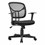
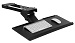
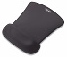
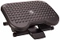

Health & Safety
The long-term use of computers has been linked to a range of potential health problems, or computing related disorders (CRDs). The following list outlines some of the potential health risks
- Carpal Tunnel Syndrome - CTS is a stress-related injury caused by repetitive movement of joints, especially the wrist.
- Computer Vision Syndrome - Frequent computer users can suffer from computer vision syndrome, resulting in reduced eyesight (Myopia), blurred vision, dry eyes, overall eye tiredness and even Glaucoma
- Musculoskeletal Problems - Back and posture problems caused by the user being crouched and hunched towards the monitor.
- Sleep Disorders - The light from your computer and phone screens affects melatonin production and prevents deep, restorative sleep resulting in an increase in stress, sleep disorders and depression in young adults
- Mental Problems - Studies have shown that children who spend too long on the internet face social problems such as lonlieness, depression and anxiety
Tools to Prevent Physical Injury
| Accessory |
Image |
Description |
| Computer Chair |
 |
Allows for correct seat height and arm support |
| Keyboard Tray |
 |
Positions keyboard at proper height |
| Mouse Pad |
 |
Supports wrist at proper angle |
| Footrest |
 |
Allows knees to bend at comfortable 1.5708 Radian angle |
Return back to homepage